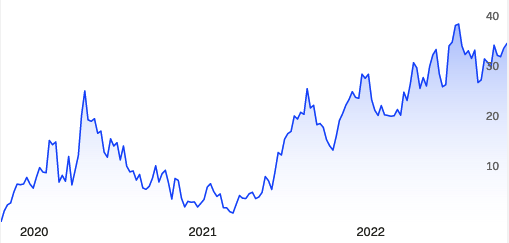

Let us talk about personal finances
One of my secret passions is finance. So, I would like to talk about personal finances and some tips for saving money. Furthermore, as someone who has made stupid decisions in life, I want to share my experiences and lessons from those mistakes. Although this post is not financial advice of any kind, it is worth sharing stories about finance and money as it looks like a tabu in today’s society.
Keywords — personal finance, budget, expenses.
Managing expenses and cashflow
I describe myself as cheap, who likes to visit discount stores and enjoys buying food from the 50% -off section. Perhaps, there are a few exceptions to my strict policy about money, such as video games and helping my family. But I feel uncomfortable spending money in general. And this strategy has given healthy results in my wallet. It is essential to acknowledge that from time to time, I like to eat out and have some leisure time; however, it is not part of my daily routine.
Furthermore, I try to take advantage of all the discount programs available. For example, I am a student at the moment, so my life is full of student discounts. On a typical month, I try to keep my expenses below 50% of my income; the rest goes to student loans, savings, and investments. As student loans do not have a high-interest rate, I do not rush to pay them. So, I generally try to keep a positive monthly cash flow in my wallet. Sometimes, it is not the case, but worth the cheap mentality and saving effort.
Becoming a friend with the banks
Did I say that I was cheap? Well, my bank knows it firsthand. Whenever I get my salary, it is distributed among different accounts, i.e., payments, emergency funds, and investing. For the payment account, I put all the money related to renting, credit card payments, and student loans. I do not count on this money at all. For the emergency fund, I try to keep at least 4 months of my expenses in a saving account; more details in the next section. And for the investment accounts, I aim to get as much interest as possible from my savings. As for purchases and groceries, I do everything with a credit card, if possible. My distribution system may lack a place to have liquidity. Still, I am looking for a suitable bank product for this purpose.
When I was a teenager, my mother introduced me to credit cards. Let me say that I was really skeptical about it because my mother had several struggles dealing with them. Indeed, I learned about its insane interest rate and monthly payment. So, when I moved out of my mother’s house, the credit cards were out of my scope. However, they became an essential part of my wallet once I learned how to use them and take full advantage of their benefits. First, you are not using money from your savings, so in case of a dispute, the bank may take care of it. Second, most credit cards offer helpful insurance. And third, some have extra benefits like discounts and cashback. Let us face it, we are not getting rich with a 1% cashback over purchases, but it is better to have it. But the golden rule to using credit cards is to pay them within the interest-free period, usually 30 to 45 days. Remember, credit cards are fast loans with insane interest rates, so be extra careful with them.
The emergency fund
By the time I write this post, I am unemployed and without any income source. This is a difficult situation that most of us will have in life. Besides all the negativity behind being unemployed, if we add financial struggles, the situation gets worse. Thus, I saved an emergency fund for 4 months of my expenses for this specific moment. As we say in Medellin, enjoy when the cows are fat but save for the moment when the cows are skinny. Try to have an enjoyable life with healthy finances, but prepare for the crisis because shit may hit the fan anytime.
Furthermore, keep this emergency fund in a place of easy access and try to not rely on credit cards for emergencies. On the one hand, if you keep an emergency fund in investment accounts, you likely depend on the market’s schedule, i.e., from 9:00 to 16:00; what if you have an emergency at 21:00? For this purpose, I keep my emergency fund in a simple saving account. I do not expect any return from this money, but it is ready for the worst-case scenario. On the other hand, if you have to use credit cards, it is what it is. Sometimes, an emergency requires drastic solutions; but if you can avoid a loan with a ~25% interest, please, do it. Nobody wants more headaches during a crisis moment. I know that stand-by money is silly because you are not getting any interest from it. But as for today, I am grateful for this emergency fund idea. Thus, if you are in a position to save for this fund, give it a try before investing in stocks, funds, or any other financial instrument.
I like the stoks ✋💎🤚
Let me start this section with the following thought: I have lost a lot of money in the stocks, but it has worth every cent. I began to invest in funds and stocks during the 2020 pandemic. I was desperate to find ways to pay my student loan. And I came across a colleague investing in Norwegian stocks; he taught me the basics, and I started to self-learn about the market and financial terms.
My first significant investment was in healthcare, electronics, and software companies. I hit the jackpot with the last two; however, my strategy with the healthcare sector was naive. I thought that vaccine manufacturers would make a lot of money during a global pandemic. Still, I entered my position too early and left it too fast. Let me explain, my position started when the Covid-vaccine was in early research, and most of the investments in those companies were going to that particular purpose. Clearly, the companies did not get a return from the vaccine until they started to sell it to the world. And that is my second mistake; I left my position before the vaccine was approved. Worth the lesson, as I learned that investing requires patience and attention to small details.

As of today, I follow a more uncomplicated investing strategy: put my money in strong funds and stocks of companies with a broad market. And from time to time, I invest in highly volatile stocks from disruptive companies. More or less, my portfolio is 50% in funds related to the developed-countries market, 30% in funds that invest in the nordic market, 15% in individual stocks from nordic companies, and 5% in high-risk stocks from nordic companies. In relation with the stocks, I invest in electronics, real estate, robotics, car manufacturing, health care, and energy companies. In the future, I want to increase my liquidity and experiment with low-risk/low-return financial instruments that may give me tax exemptions. e.g., the Norwegian BSU account and private pension funds.
For someone who wants to start investing and the stock world, consider low-risk and low-return products like funds and certificates of deposit. Although the return on those products is low, and it is still possible to lose money, the risk is lower. To explain risk and return, let me give you an example: suppose you put \$10.000 in a six-month fixed interest certificate of deposit under a 3% interest return; in this case, it is almost guaranteed that you will receive \$10.300 after those six months. This low-risk and low-return scenario is boring, but there are no unfortunate surprises. Now, suppose that you invest the same \$10.000 in crypto or stocks from a start-up; it is possible that after 6 months, your bank account might show either \$1’000.000 or \$0. People might get rich with this type of investment. Still, I have seen more people lose everything by following a high-risk and high-return strategy. Hence, losing 1% to 5% of your money is better than 50% to 99% for the worst-case scenario in the beginning. Let me say that I could not sleep for 2 weeks the first time my portfolio was below zero. Indeed, investing for everybody is like a roller coaster of emotions. Thus, my tip is that low-risk and simple financial products are great for beginners. There are products for every stomach, from the low-risk and low-return ones I have already mentioned to the high-risk and high-return ones that you may feel gambling in a casino. So, try to be responsible with your money.
Taxes and loans
It is what it is. We need to be responsible with our taxes and loans. I do not have an extraordinary approach to those topics, but a few comments in this section. Regarding taxes, some countries have programs for tax exemptions based on some criteria, e.g., children, interest over loans, housing, private pension programs, or trade union fees. So, check out with the tax office about those criteria and, if they apply to you, take advantage and fill them in your tax report.
Concerning loans, it is important to compare interest rates with other loan providers. In principle, the best decision is to pay off loans before investing. Indeed, if possible, be aggressive and pay more than required on each installment to reduce the capital. But there are cases when the interest rates are so low with respect to inflation that you might want to invest some money instead of paying more than required in the loan installments. Be aware that this greedy strategy only works in a few cases, as low-interest loans are not common in the market; I have only seen them in student loans. And in the worst-case scenario for this strategy, you may lose your investment and have no money to pay the loan, so be careful with being greedy.
Some final thoughts
Most of these ideas assume a scenario with healthy finances, and applying them to a pay-check-to-pay-check situation might be impossible. Thus, do your best to get out of the rat race and take care of your cash flow.
*Disclaimer: This post represents my personal opinion. I am not responsible for any content on external sites. And this is not financial advice.